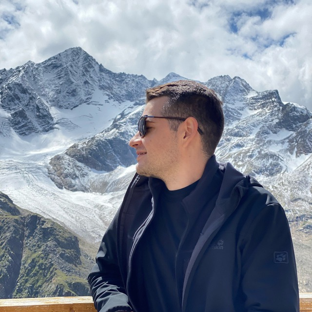

Санкт-Петербург, Россия
Борис Рябов
Руководитель отдела фронтенд-разработки
12+ лет в ИТ. Руковожу фронтенд-отделом из 50 человек в YooMoney, развиваю платёжные продукты, которыми пользуются миллионы.

Санкт-Петербург, Россия
Руководитель отдела фронтенд-разработки
12+ лет в ИТ. Руковожу фронтенд-отделом из 50 человек в YooMoney, развиваю платёжные продукты, которыми пользуются миллионы.
